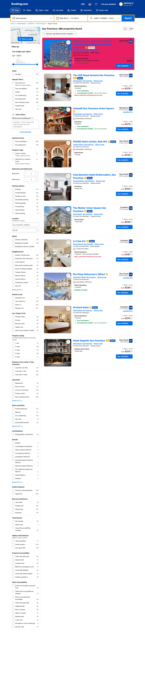
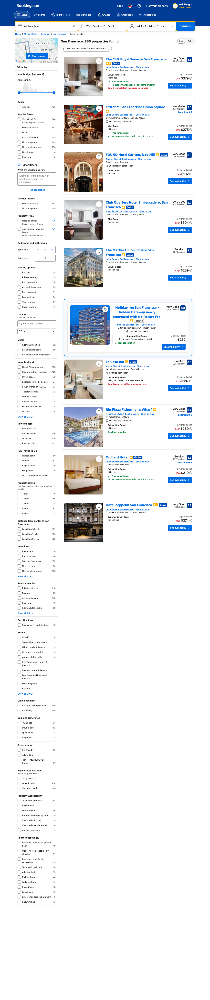
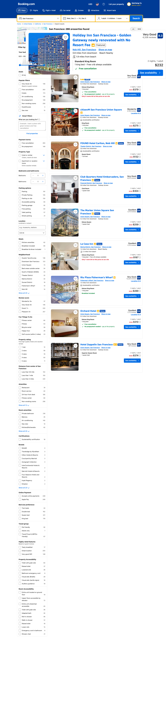
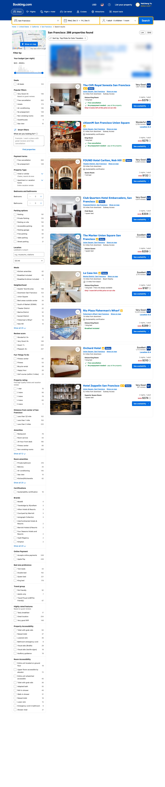

Key Findings
Our extensive experiments across 8 variant families (48 variants total), 5 real-world websites, and 4 representative web agents reveal:
Strong Influence Factors
Background color contrast, item size, position, and card clarity have a strong influence on agents' actions and decision-making patterns.
Minor Influence Factors
Font styling, text color, and item image clarity exhibit minor effects on agent behavior, suggesting current VLMs process text in abstracted forms.
Evaluation Metrics
We use Target Click Rate and Target Mention Rate to jointly evaluate visual attribute effects, measuring both action and reasoning capabilities.
8 Variant Families - Representative Examples
🎨 Background Color
Strong influence: Color contrast variations

Example: Pink (#e91e63)
📍 Position
Strong influence: Spatial positioning changes

Example: Spotlight Position
📏 Item Size
Strong influence: Different size scales

Example: Large Size (1.5x)
🔍 Card Clarity
Strong influence: Visual saliency

Example: Blur Effect (4px)
📝 Font Styling
Minor influence: Typography changes
Font variations tested:
Comic Sans, Times, Arial, etc.
🎨 Text Color
Minor influence: Text color variations
Color variations tested:
Red, Blue, Purple, Green, etc.
🖼️ Image Clarity
Minor influence: Image quality variations
Blur levels tested:
1px, 2px, 4px, 8px, sharp
🔗 Combinations
Multiple attributes combined
Testing interactions between
multiple visual attributes
📌 Original Baseline

All variants are compared against this original page
📊 Summary: Our experiments across 48 variants (8 families) show that Background Color, Position, Item Size, and Card Clarity strongly influence web agent behavior, while Font Styling, Text Color, and Image Clarity have minimal impact. The Combinations family tests multi-attribute interactions.